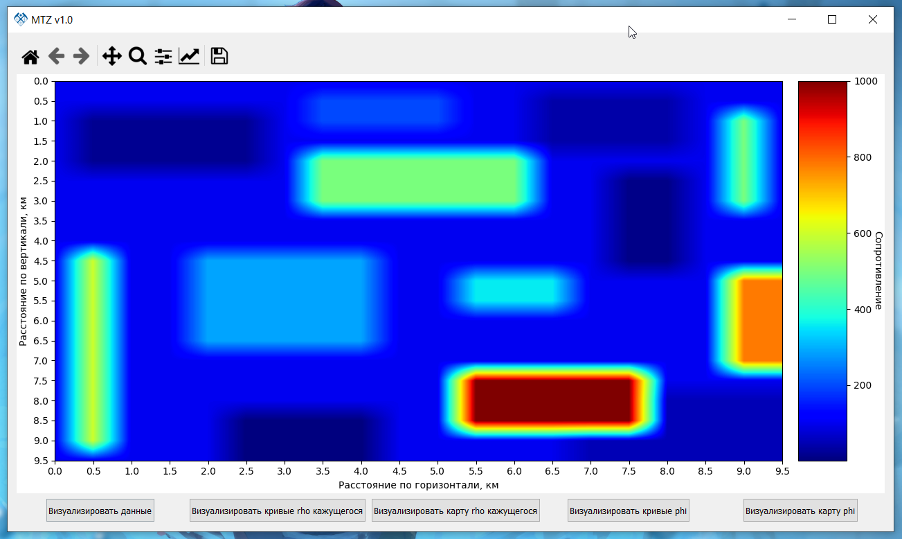
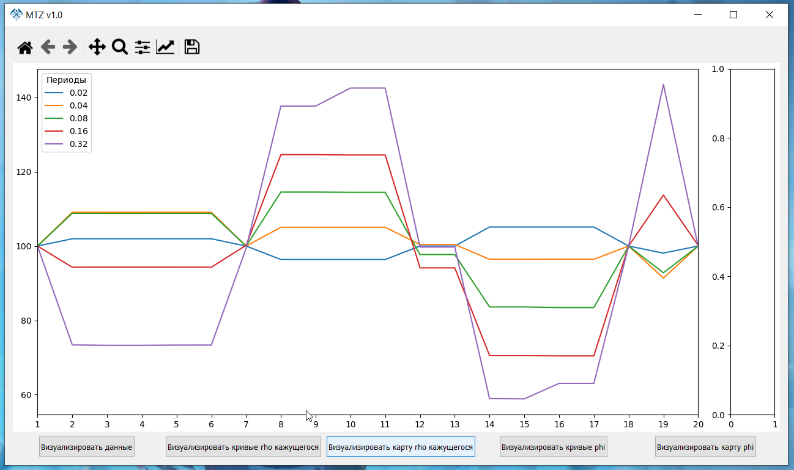
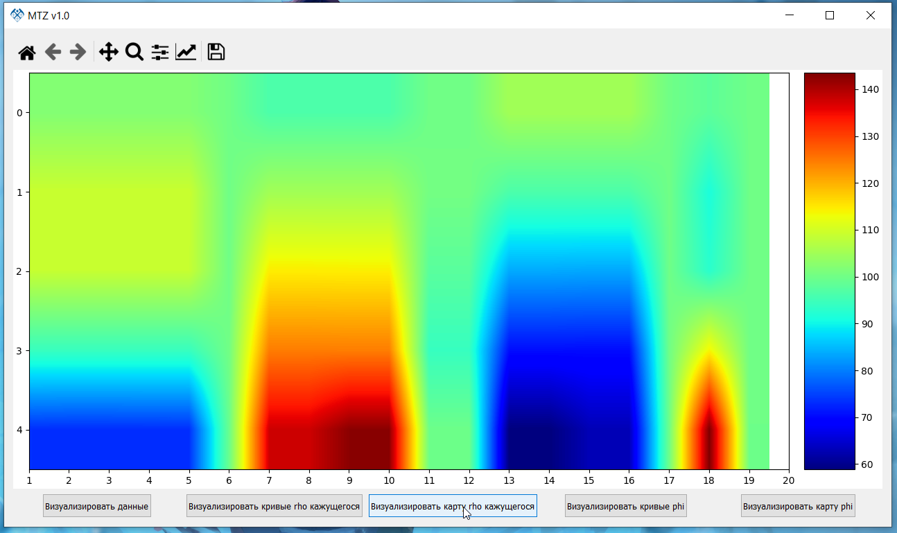
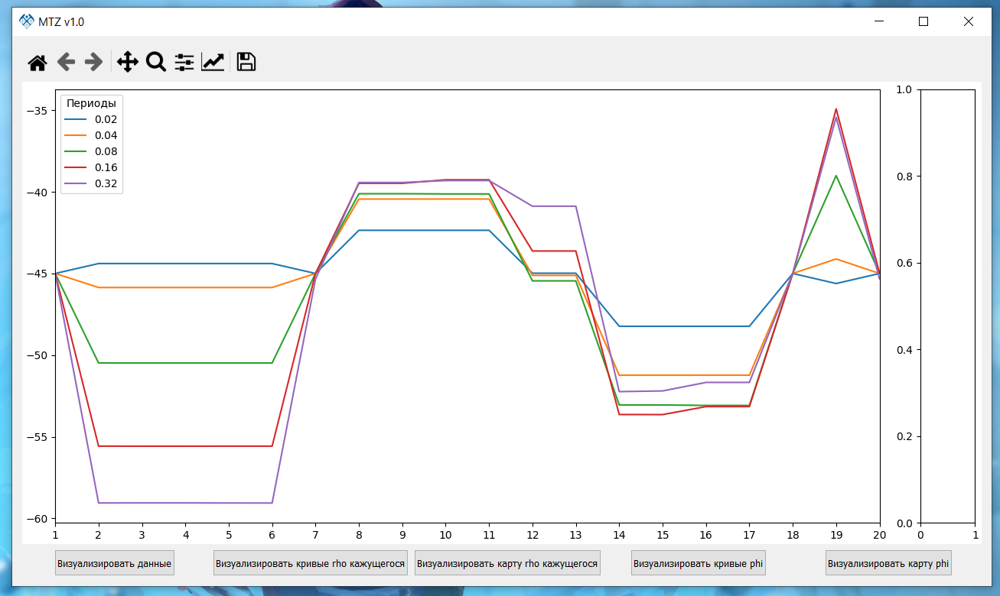
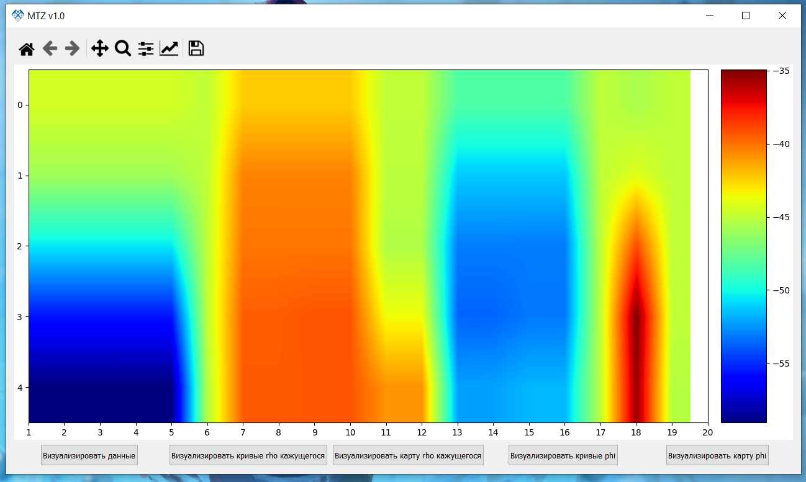

MTZ solver
Метод магнитотеллурического зондирования (МТЗ) являетсяодним из основных методов электроразведки. Он основан на изучении переменного электромагнитного поля магнитосферной и ионосферной природы с целью получения сведений о строении верхних слоев Земли. Идея этого метода была предложена в 1950 г академиком А.Н.Тихоновым. Практическое применение МТЗ началось в 60-х годах.
Проект представлен компактной программой, созданной в ходе выполнения курсовой работы. Программа позволяет решать двухмерную задачу МТЗ и визуализовать данные, представленные в специальном для неё виде: в .xlsx или .txt формате
1. Excel файл формата (.xlsx). Данные в нём представлены таблицей, где первая строка состоит из двух чисел, определяющих размер матрицы, далее идут две строки с дефолтной плотностью, и потом следует таблица данных, указанного выше размера, то есть, как в случае примера, 20х20.
2. Текстовый файл формата (.txt). Данные в нём представлены таблицей, где первая строка состоит из двух чисел, определяющих размер матрицы, далее идут две строки с дефолтной плотностью, и потом следует таблица данных, указанного выше размера, то есть, как в случае примера, 20х20. Все числа пишутся через пробел.
Интерфейс и функции
Меню
Интерфейс меню представлен тремя кнопками:
Кнопка выбора данных, которая в случае выбора корреткных данных откроет окно визуализации.
Ссылка на документацию.
Краткая справка.
Окно визуализации и визуализация данных

Визуализация кривых Ro к

Визуализация Ro к

Визуализация кривых phi

Визуализация карты phi
Скачать

Контакты
Проект выполнен студентом РГГРУ (МГРИ) им. Серго Орджоникидзе в рамках курсовой работы по предмету "Многомерное компьютерное моделирование".